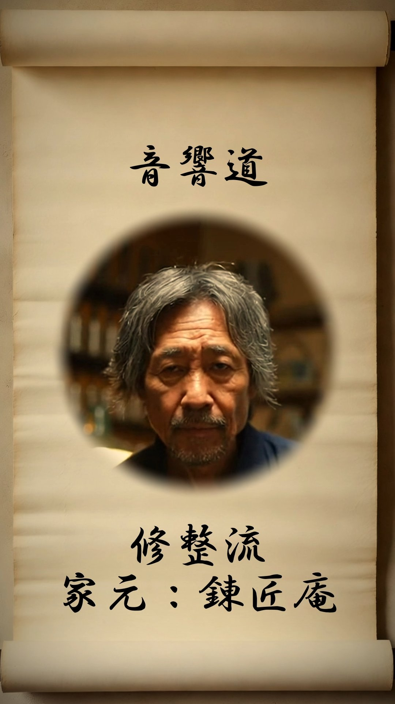

音 響 道
オーディオ道
音響道、十二大流派の家元本人による流派紹介
真音流
しんおんりゅう
玄聴斎
染音流
せんおんりゅう
艶調庵
意匠流
いしょうりゅう
空間斎
懐韻流
かいいんりゅう
追昔庵
器道流
きどうりゅう
究器斎
蒐雅流
しゅうがりゅう
蔵音堂

修整流
しゅうせいりゅう
錬匠庵
便生流
べんせいりゅう
和用斎
交談流
こうだんりゅう
談機軒
雅玩流
ががんりゅう
弄彩堂
示威流
じいりゅう
威響斎
巡礼流
じゅんれいりゅう
遍音子